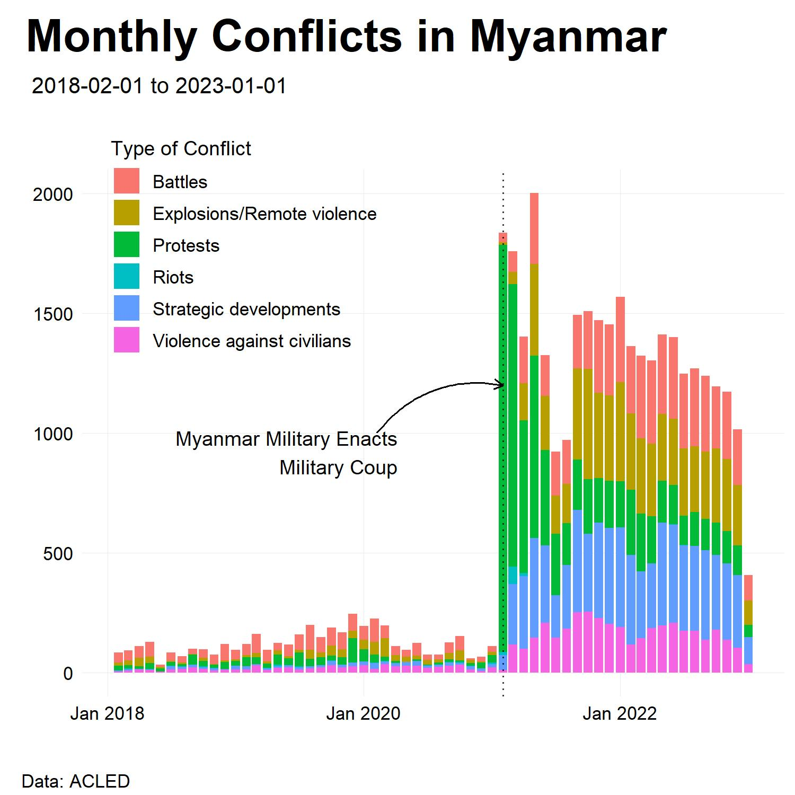

April 6, 2023
3.5 times more battles, more than 6.5 times more explosions/remote violence, 32 times more protests, almost 5 times more riots, nearly 20 times more strategic developments, and 5 times more acts of violence against civilians.
This February marked the two-year anniversary of the coup in Myanmar (Burma) by the Tatmadaw, the country's military junta. Citizens and civil society came out immediately in protest to which the military responded with violent crackdown. Since then, the country has erupted into an all-out civil war with the newly formed People's Defence Force (PDF) on side with various Ethnic Armed Organizations (EAOs) against the Myanmar military.
The Armed Conflict Location & Event Data (ACLED) project funded by the Open Societies Foundation collects and maintains a database of conflict data across multiple countries including Myanmar. We take a dive into this dataset and present some interesting findings to present the extent to which the conflict has developed in the nation.
In 2021, the annual change in various forms of conflict rose dramatically. Battles in the nation rose 3.5 fold, explosions and remote violence rose 6.5 times, protest activity rose by 32 times, riots increased 5 times, strategic activity rose 20 times, and acts of violence against civilians rose 5 fold. The data only includes counts of the violent activity and understates the characteristic elements of conflict, including excessive force, torture, and the number of deaths among other factors.
Figure 1. Monthly Instances of Various Forms of Conflict in Myanmar. The onset of the coup in Myanmar has led to unprecedented levels of conflict throughout the nation.
Figure 2. Instances of Battles in Myanmar from 2010 to 2021 (Pre-Coup). Battles in Myanmar pre-coup were concentrated within certain geographic regions. Specifically: Rakhine State, Shan State, and Kayin (Karen) State.
Figure 3. Instances of Battles in Myanmar from 2021 to the Present (Post-Coup). Battles in Myanmar following the coup have been more dispersed throughout the country. The development of a new actor, the People's Defence Force, has changed the nature of armed struggle in the country.
Figure 2 and figure 3 illustrate the change in the nature of the battles before and after the coup. According to figure 2, in the pre-coup period from 2010 to 2021, the battles of the country are characterized by regional ethnic conflicts, with most battles centralized in Rakhine, Shan, and Kayin State where the military engaged with local EAOs, notably the Arakan Army, multiple EAOs in Shan State, and the Karen National Liberation Army respectively.
As shown in figure 3, in the post-coup period from 2021 to the present, the battles intensified in Myanmar, with the addition of the participation of the PDF. Since the coup, the battles have been primarily between the military and the PDF. The battles are also more spread out across the country, which suggests a full-blown civil war.
The data from ACLED tells us what we already know: the onset of the coup has lead to increased conflict throughout the country. What it perhaps reveals as new is that the nature of conflict has changed along ethnic, geographic, and political lines. More work into analyzing the data and the nature of the conflict is necessary in producing informed policy action towards democratic and peaceful solutions. Action from the international community is direly needed to help alleviate tensions, protect democratic institutions, support already vulnerable groups, and reduce the humanitarian calamity of the conflict.